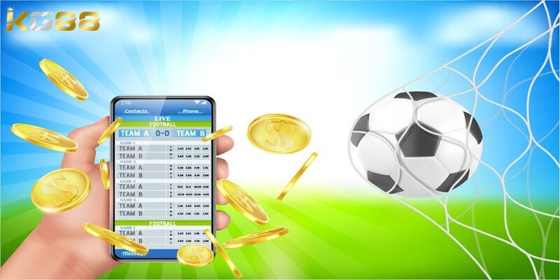

THỂ THAO KG88
Mẹo Chơi Cá Cược Thể Thao Lụm Tiền Thưởng Khủng
POSTED ON THÁNG SÁU 24, 2024 BY ADMINKG88
Mẹo chơi cá cược thể thao như thế nào không phải là việc khó, quan trọng là người chơi cần phải bỏ túi. Cá cược thể thao ngày nay đã trở thành một phần không thể thiếu của cộng đồng game thủ. Để có thể tham gia trò chơi này, anh em hãy theo dõi bài viết dưới đây của nhà cái KG88 nhé.
Giới thiệu về loại hình cá cược thể thao hấp dẫn
Trước khi tìm hiểu mẹo chơi cá cược thể thao, mời bạn đọc tham khảo qua điểm thú vị của bộ môn giải trí này. Đây là một môn giải trí trực tuyến cực kỳ phổ biến có mặt tại hầu hết các nhà cái uy tín, trong đó nổi tiếng nhất là nhà cái KG88. Trò chơi này được đông đảo các game thủ của nhà cái yêu thích.

Tìm hiểu về loại hình cá cược thể thao thú vị
Tại sảnh thể thao KG88 cung cấp rất nhiều môn thể thao trên thế giới như bóng đá, bóng rổ, bơi lội, leo núi, bóng bàn… Mỗi trò chơi sẽ có các cửa cược và tỷ lệ thưởng khác nhau do nhà cái quy định. Người chơi sẽ có cơ hội vừa xem trực tiếp các trận đấu vừa có thể tham gia đặt cược. Nhà cái thường xuyên cập nhật bảng tỷ lệ cược để người chơi tiện theo dõi.
Đối với những người chơi am hiểu về thể thao và có nhiều kinh nghiệm bộ môn này, chắc chắn tỷ lệ thắng sẽ cao hơn. Tuy nhiên, nếu bạn chưa có mẹo chơi cá cược thể thao thì cũng đừng quá lo lắng. Vì với những hướng dẫn cá cược thể thao của chúng tôi dưới đây sẽ giúp anh em tăng thêm tự tin và cơ hội chiến thắng.
Hướng dẫn người chơi mới tham gia cá cược thể thao từ A – Z
Để tham gia cá cược thể thao trước hết người chơi hãy tạo tài khoản tại nhà cái. Người chơi có thể làm theo các bước tham gia cá cược thể thao được chia sẻ dưới đây:
Hướng dẫn từ A – Z người chơi mới tham gia cá cược thể thao
Bước 1: Đăng ký tài khoản KG88 hành công. Sau đó, quay lại trang chủ nhà cái và đăng nhập để bắt đầu tham gia cá cược.
Bước 2: Tại màn hình trang chủ, người chơi cần bấm vào danh mục cá cược thể thao. Bạn sẽ thấy trên màn hình có rất nhiều bộ môn thể thao mà nhà cái cung cấp. Hãy chọn cho mình một trò chơi mà bạn cảm thấy yêu thích và tự tin chơi nhất.
Bước 3: Bước cuối cùng trong hướng dẫn cá cược thể thao đó là đặt cược. Dựa vào những dữ liệu mà bạn thu thập được và phân tích để đưa ra quyết định đặt cược đúng đắn nhất. Ngoài ra, bạn cũng nên cân nhắc mẹo chơi cá cược thể thao của mình và trình độ, khả năng tài chính của mình để chọn mức cược phù hợp.
Chỉ vài bước cơ bản trên là bạn đã hoàn thành quá trình cá cược thể thao. Bây giờ, nhiệm vụ của bạn là tận hưởng trận đấu và chờ đón kết quả.
Mẹo chơi cá cược thể thao hiệu quả được chuyên gia chia sẻ
Ngoài hướng dẫn cá cược thể thao được chia sẻ trên, người chơi cũng cần phải nắm chắc một số kinh nghiệm khi tham gia:
Tìm hiểu tỷ lệ cược trong các bộ môn cá cược thể thao
Nhà cái cung cấp cho người chơi các tỷ lệ cược chính gồm tỷ lệ cược Châu Âu, tỷ lệ cược Châu Á, tỷ lệ cược Hong Kong, tỷ lệ cược Malaysia, tỷ lệ cược Indonesia. Hãy phân tích thật kỹ để chọn tỷ lệ cược có lợi nhất cho mình.
Mẹo chơi cá cược thể thao xem lại kết quả để đặt cược
Một trong những phương pháp chơi cá cược thể thao với cách xem kết quả. Sau khi trận đấu kết thúc, kết quả sẽ được công bố trên bảng của nhà cái. Người chơi sẽ dựa vào đó để biết xem mình thắng hay không. Nhà cái chúng tôi sẽ thanh toán tiền thưởng cho người chơi ngay sau khi trận đấu kết thúc.
Mẹo cá cược thể thao trong lúc trận đấu đang diễn ra
Mẹo chơi cá cược thể thao trong lúc trận đấu diễn ra, nhà cái sẽ liên tục cập nhật tỷ lệ cược nên người chơi sẽ được phép thay đổi cược hoặc cược thêm các kèo khác. Nếu bạn muốn cược thêm, hãy nhấn đặt cược thêm >> điền mức cược và nhấn xác nhận để hệ thống nhà cái xử lý yêu cầu.
Một số mẹo chơi cá cược thể thao trong lúc trận đấu đang diễn ra
Người chơi sẽ nhận được thông báo cược thành công sau khi được nhà cái chấp nhận, quá trình phê duyệt rất nhanh. Tuy nhiên, nếu có bất kỳ tình huống quan trọng nào xảy ra, cược có thể sẽ bị hủy bỏ.
Mẹo chơi cá cược thể thao lựa chọn thời gian phù hợp
Thời gian là yếu tố mà ít ai quan tâm khi cá cược bóng đá. Trường hợp trận bóng diễn ra sớm, nhà cái 789Bet sẽ có thể nắm bắt thông tin một cách dễ dàng và đưa ra tỷ lệ cá cược thể thao. Chính vì vậy, tỷ lệ thắng cược sẽ cao hơn. Còn đối với trận đấu tổ chức muộn hơn, tỷ lệ đặt cược sẽ thay đổi.
Xác định để đưa ra kèo chuẩn
Nếu như bạn chọn kèo châu Á, tỷ lệ cá cược có phần đa dạng hơn, người chơi lựa chọn được kèo dễ hơn và biết thời điểm đặt cược phù hợp. Còn đối với kèo châu Âu cần bạn chơi phải cân nhắc kỹ lưỡng khi đặt cược.
Bài viết trên vừa cung cấp những thông tin mẹo chơi cá cược thể thao cực chi tiết cho người chơi tham khảo. Anh em hãy đăng ký ngay tài khoản FB88 để nhận được nhiều ưu đãi hấp dẫn và được trải nghiệm cảm giác cá cược tuyệt vời.
BÀI VIẾT MỚI